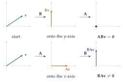

STEP II 1993, Question 6
Read the question before you go on. It is in the STEP Support Programme’s question database: step.maths.org/questions/93-s2-q6
The hook
Matrices can be added and multiplied, so it is tempting to treat them like numbers. This question tests that temptation with four “rules” that are true for numbers, and asks which survive for matrices. Most of them fail, and the way they fail is instructive. Matrix multiplication is not commutative; there are non-zero matrices whose product is zero; and a quadratic equation for matrices can have infinitely many solutions.
These failures are not defects. They are the reason matrices are useful: they describe transformations of space, and doing two transformations in different orders genuinely gives different results. In 1925 Werner Heisenberg discovered that the quantities of quantum mechanics behave like matrices rather than numbers, and that the failure of \(\mathbf{AB} = \mathbf{BA}\) is the mathematical form of the uncertainty principle.
Before you start
For real numbers, why is it true that \(ab = 0\) implies \(a = 0\) or \(b = 0\)? Which property of numbers does the argument use, and does it hold for matrices?
If \(ab = 0\) and \(a \neq 0\), divide by \(a\) to get \(b = 0\). The argument needs every non-zero number to have an inverse. Non-zero matrices need not have inverses (those with determinant zero do not), so the argument breaks down. Keep the geometric picture in mind too: a matrix is a transformation of the plane, and a product \(\mathbf{AB}\) means “do \(\mathbf{B}\), then \(\mathbf{A}\)”.
Working it through
Stage 1 Can \(\mathbf{AB} = \mathbf{0}\) but \(\mathbf{BA} \neq \mathbf{0}\)?
Think geometrically. You want \(\mathbf{B}\) to send everything into a line that \(\mathbf{A}\) then squashes to zero. But in the other order, \(\mathbf{A}\) should not squash everything that \(\mathbf{B}\) then kills.
Let \(\mathbf{A} = \begin{pmatrix} 1 & 0 \\ 0 & 0 \end{pmatrix}\), which projects onto the \(x\)-axis (killing the \(y\)-axis), and \(\mathbf{B} = \begin{pmatrix} 0 & 0 \\ 1 & 0 \end{pmatrix}\), which sends \((x, y)\) to \((0, x)\), into the \(y\)-axis. Then \[\mathbf{AB} = \begin{pmatrix} 1 & 0 \\ 0 & 0 \end{pmatrix}\begin{pmatrix} 0 & 0 \\ 1 & 0 \end{pmatrix} = \begin{pmatrix} 0 & 0 \\ 0 & 0 \end{pmatrix}, \qquad \mathbf{BA} = \begin{pmatrix} 0 & 0 \\ 1 & 0 \end{pmatrix} \neq \mathbf{0}.\] The assertion is false (Figure 7.1.1).■
Stage 2 The difference of two squares
Expanding carefully, keeping the order of every product: \[(\mathbf{A} - \mathbf{B})(\mathbf{A} + \mathbf{B}) = \mathbf{A}^2 + \mathbf{AB} - \mathbf{BA} - \mathbf{B}^2.\] This equals \(\mathbf{A}^2 - \mathbf{B}^2\) exactly when \(\mathbf{AB} = \mathbf{BA}\). With the matrices of Stage 1, \(\mathbf{AB} - \mathbf{BA} = -\mathbf{BA} \neq \mathbf{0}\), so the assertion is false.■
Stage 3 Non-zero solutions of \(\mathbf{AX} = \mathbf{0}\)
If \(\det\mathbf{A} \neq 0\), what can you do to \(\mathbf{AX} = \mathbf{0}\)? If \(\det\mathbf{A} = 0\), can you find a non-zero column vector \(\mathbf{v}\) with \(\mathbf{Av} = \mathbf{0}\)?
If \(\det\mathbf{A} \neq 0\), then \(\mathbf{A}^{-1}\) exists and \(\mathbf{X} = \mathbf{A}^{-1}\mathbf{AX} = \mathbf{0}\): no non-zero solution.
If \(\det\mathbf{A} = 0\), write \(\mathbf{A} = \begin{pmatrix} a & b \\ c & d \end{pmatrix}\) with \(ad = bc\). The vectors \(\begin{pmatrix} b \\ -a \end{pmatrix}\) and \(\begin{pmatrix} d \\ -c \end{pmatrix}\) satisfy \(\mathbf{A}\begin{pmatrix} b \\ -a \end{pmatrix} = \begin{pmatrix} ab - ba \\ cb - da \end{pmatrix} = \mathbf{0}\), and similarly for the other. Since \(\mathbf{A} \neq \mathbf{0}\), at least one of them is non-zero; call it \(\mathbf{v}\). Then the matrix \(\mathbf{X}\) whose two columns are both \(\mathbf{v}\) is non-zero and \(\mathbf{AX} = \mathbf{0}\). So the assertion is true.■
Stage 4 How many square roots?
Find non-zero \(\mathbf{A}\) and \(\mathbf{B}\) for which \(\mathbf{X}^2 + \mathbf{AX} + \mathbf{B} = \mathbf{0}\) has infinitely many solutions. (Hint: make the left-hand side a perfect square, \((\mathbf{X} - \mathbf{I})^2\), and think about matrices whose square is zero.)
Take \(\mathbf{A} = -2\mathbf{I}\) and \(\mathbf{B} = \mathbf{I}\), both non-zero. The equation becomes \((\mathbf{X} - \mathbf{I})^2 = \mathbf{0}\). Any matrix \(\mathbf{N}\) with \(\mathbf{N}^2 = \mathbf{0}\) gives a solution \(\mathbf{X} = \mathbf{I} + \mathbf{N}\), and there are infinitely many such \(\mathbf{N}\): \[\mathbf{N} = \begin{pmatrix} 0 & t \\ 0 & 0 \end{pmatrix}, \qquad \mathbf{N}^2 = \mathbf{0} \text{ for every real } t.\] So \(\mathbf{X} = \begin{pmatrix} 1 & t \\ 0 & 1 \end{pmatrix}\) is a solution for every \(t\), and the assertion is false.■
Looking back
Order matters. Every expansion must keep products in order; \(\mathbf{AB}\) and \(\mathbf{BA}\) are usually different.
Zero divisors. Non-zero matrices can multiply to zero, which breaks the argument behind “a quadratic has at most two roots”.
Think of transformations. Each counterexample was easy to find by picturing what the matrices do to the plane.

What’s really going on
Arthur Cayley introduced matrix algebra in 1858, treating matrices as single objects that can be added and multiplied, rather than just as tables of coefficients. He noticed at once that multiplication is not commutative, and he proved the Cayley–Hamilton theorem: every square matrix satisfies its own characteristic equation. For a \(2 \times 2\) matrix with trace \(t\) and determinant \(d\), this says \(\mathbf{M}^2 - t\mathbf{M} + d\mathbf{I} = \mathbf{0}\), a fact we use repeatedly in this chapter (Section 7.4). The \(2 \times 2\) real matrices form a ring: you can add, subtract and multiply, but multiplication is not commutative, and there are zero divisors, non-zero elements whose product is zero.
Infinitely many square roots
Stage 4 can be made even more striking. The equation \(\mathbf{X}^2 = \mathbf{I}\) has the obvious solutions \(\pm\mathbf{I}\), but also every reflection of the plane in a line through the origin, \(\mathbf{X} = \begin{pmatrix} \cos\theta & \sin\theta \\ \sin\theta & -\cos\theta \end{pmatrix}\), since reflecting twice does nothing. That is a whole circle of square roots of \(\mathbf{I}\). A polynomial of degree \(n\) with number coefficients has at most \(n\) roots because numbers have no zero divisors; matrices do, and the count fails.
Non-commutativity in physics
In classical mechanics, position \(x\) and momentum \(p\) are numbers and \(xp = px\). In quantum mechanics they become operators (infinite matrices) with \(xp - px = \mathrm{i}\hbar\), where \(\hbar\) is Planck’s constant divided by \(2\pi\). This single non-commutation relation implies Heisenberg’s uncertainty principle: position and momentum cannot both be known exactly. When Heisenberg discovered the rules of quantum mechanics in 1925 he did not know what matrices were; Max Born recognised that the strange multiplication rule Heisenberg had invented was matrix multiplication.
The thinking skill
When you meet a new kind of object, check which familiar rules still hold, and find out exactly which property each rule depends on.
The rule “\(ab = 0\) implies \(a = 0\) or \(b = 0\)” depends on division; “\((a - b)(a + b) = a^2 - b^2\)” depends on commutativity. Knowing what each rule rests on tells you when you can still use it.
Try this next
When do they commute? Find all \(2 \times 2\) matrices that commute with \(\begin{pmatrix} 1 & 1 \\ 0 & 1 \end{pmatrix}\).
Square roots of zero. Find all \(2 \times 2\) real matrices \(\mathbf{N}\) with \(\mathbf{N}^2 = \mathbf{0}\). (Hint: use the Cayley–Hamilton theorem to show \(\operatorname{tr}\mathbf{N} = \det\mathbf{N} = 0\).)
Reflections. Show that every reflection matrix \(\begin{pmatrix} \cos\theta & \sin\theta \\ \sin\theta & -\cos\theta \end{pmatrix}\) squares to \(\mathbf{I}\), and find the line it reflects in.
Cayley–Hamilton. Prove that every \(2 \times 2\) matrix satisfies \(\mathbf{M}^2 - (\operatorname{tr}\mathbf{M})\mathbf{M} + (\det\mathbf{M})\mathbf{I} = \mathbf{0}\) by direct calculation.
Further reading
Gilbert Strang, Introduction to Linear Algebra (Wellesley-Cambridge). The most popular first linear algebra text, with an emphasis on understanding.
Sheldon Axler, Linear Algebra Done Right (Springer; free online). A more abstract approach, centred on linear maps rather than matrices.
Jim Baggott, The Quantum Story (Oxford University Press). The history of quantum mechanics, including Heisenberg’s matrix mechanics.